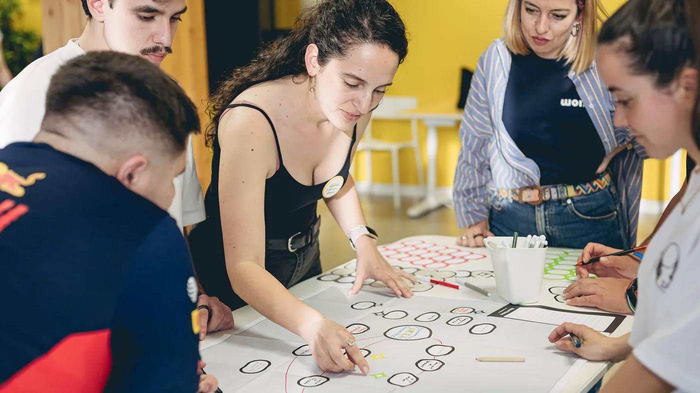
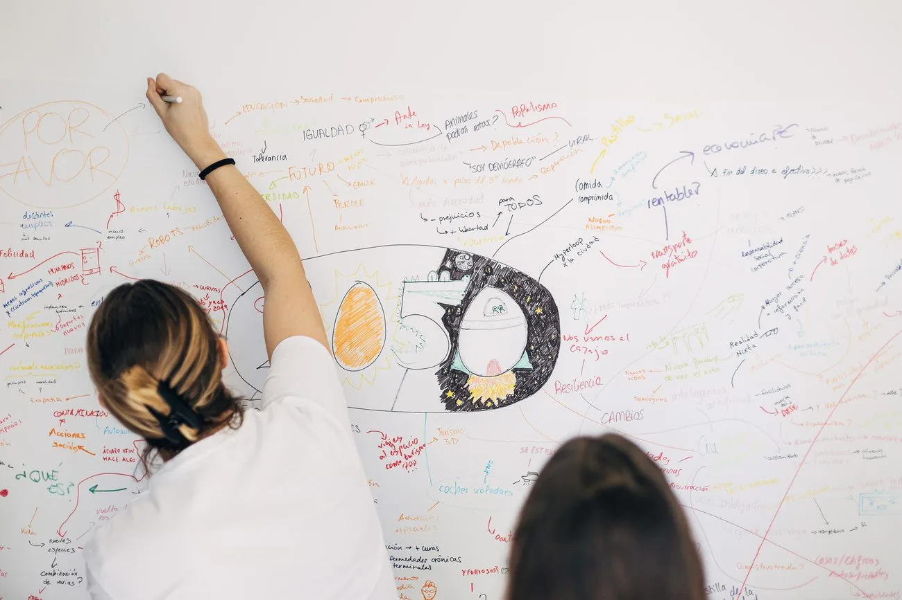
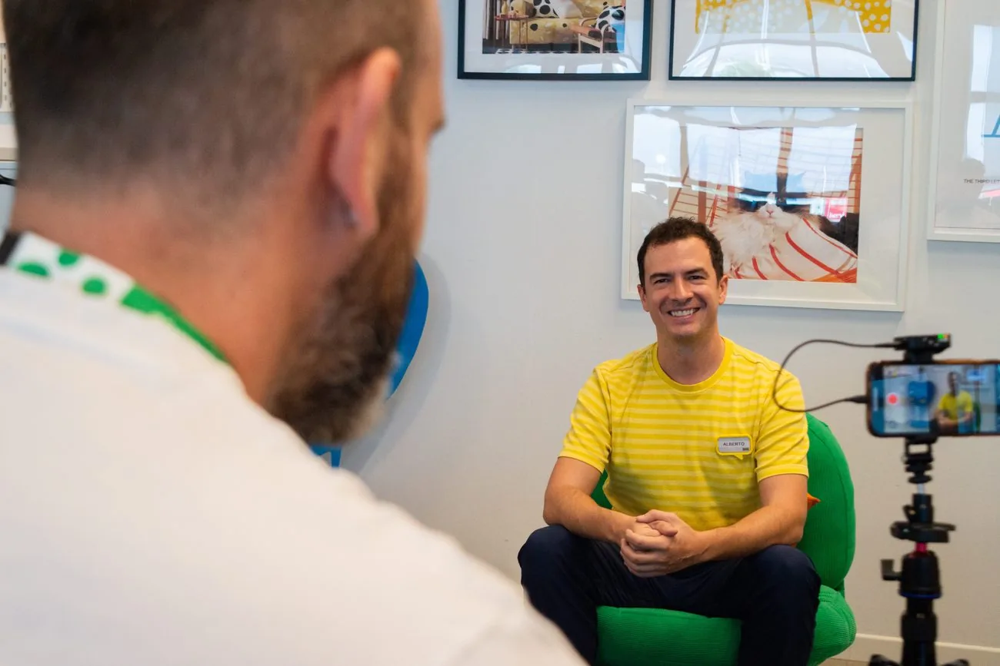
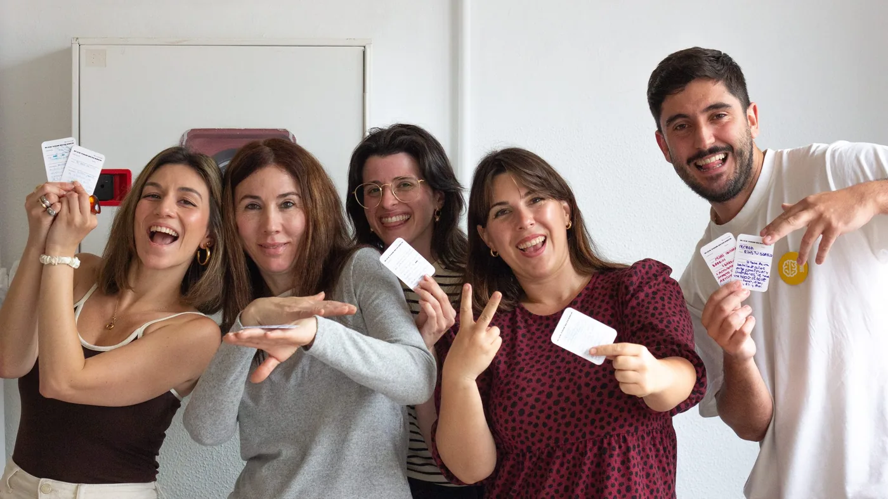

PUBLIC SPEAKING TO LARGE AUDIENCES
The ability to convey complex concepts clearly and persuasively to a wide audience was developed, holding attention and encouraging active participation throughout the sessions.
MANY HANDS
PROJECT 01
CreativeLab is a creativity lab where tools and methodologies are taught for developing a project over four days.
This conveys the understanding that creativity is not an innate gift, but a skill that can be cultivated, developed and learned through practice and constant work.
Role
Design, organisation and photography
Period
2017 / Present

The ability to convey complex concepts clearly and persuasively to a wide audience was developed, holding attention and encouraging active participation throughout the sessions.
Multiple working groups were coordinated in parallel, making sure each one progressed properly through its creative process without losing sight of the lab’s overall learning goals.
A wide range of ideation tools was internalised and put into practice, essential for guiding participants through their own processes of exploration and problem-solving.
An analytical framework for assessing the teams’ final results was developed, measuring both how innovative each proposal was and how well the methodologies taught had been absorbed.



MORE PROJECTS